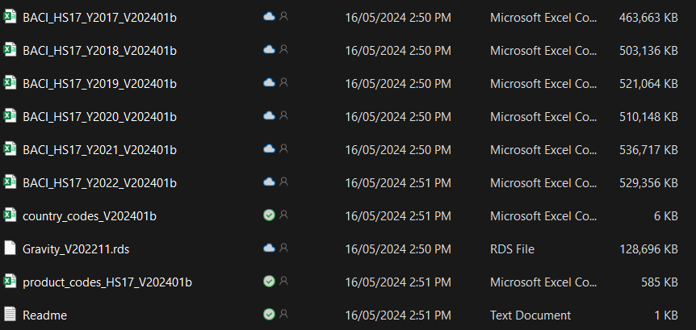
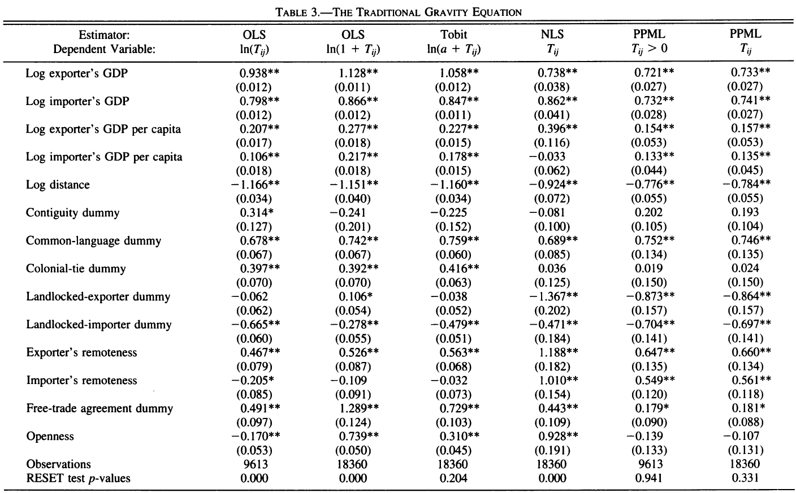

Gravity in Stata: a short workshop
For the latest version click here.
Introduction
The gravity model is probably the most popular model in international trade. Many uses them. It is very intuitive, great predictive power, and most importantly, tweakable (Yotov 2022). But the even most important is that UI students love them. If you’re doing trade for your thesis, then you probably going to use the gravity model as your backbone.
This guide is my attempt to help you learn gravity model much easier. The most important part is probably the data and the model itself. What is the minimum things you need in the gravity model, how to arrange the database, run them, and interpret them. You must familiarize yourself with the data and its wrangling (80% of your coding) as well as the main gravity specification to date. I encourage students to pay careful attention to Yotov (2022) as it hosts the recent development in the gravity model, a must read if you’re planning to utilize gravity model.
I use Stata here because most economists I know are still using Stata. I myself quite often do R these days. However, the two language aren’t very different. You can do the same thing on both, but you may need to google a bit. It’s okay to use google a lot. I did as well even right now.
Oh yeah I also informed you guys know Stata already so I won’t go into too much basic stuff. For example, you probably already know the function gen and egen, also import and cd. Some I will repeat but won’t discuss too much. Also, you’d want to learn how to use outreg2, a package to save regression results.
By the way, for the R version of gravity, you can consult to this page.
Data
I procure data for this workshop from CEPII. From their website, CEPII is:
The CEPII is the leading French center for research and expertise on the world economy. It contributes to the policy making process trough its independent in-depth analyses on international trade, migrations, macroeconomics and finance. The CEPII also produces databases and provides a platform for debate among academics, experts, practitioners, decision makers and other private and public stakeholders. Founded in 1978, the CEPII is part of the network coordinated by France Strategy, within the Prime Minister’s services.
I use their BACI dataset (Gaulier and Zignago 2010) and gravity dataset (Conte, Cotterlaz, and Mayer 2022). You can get those from this link. BACI is under “international trade” banner while gravity is under “Gravity” banner. Specifically, I downloaded the 2017-2022 version of BACI and for the gravity dataset I downloaded the R version. You can of course download whichever version you like but for the purpose of this workshop maybe its best to stick with the same dataset as I.
You can also download from my drive.
Note that the data here is extremely large in size so be mindful. You need hefty internet quota and reasonable speed. Also, you can try opening it with spreadsheet software but unless you have a strong computer, i’d advice against it. Use R instead.
In the CEPII website you can use various other dataset that may be useful for you. At the same time, there are various other source you can utilise for your actual project that’s not necessarily from CEPII.
working directory
If you finished downloading data and installing softwares, you then need to set up a working directory. A working directory is basically a folder where you have all the data and your do file. For now what you want is to have a folder filled with your downloaded data. Make sure you know the path to this folder. I tend to use easy path for my projects and move it somewhere else when I finished. If you use github or the likes, it’ll be even nicer because you can actually wipe out your local repo when you’re done.
All in all, you should have a folder with these stuff in it:

Notes about the data country_codes, product_codes and Readme are all for reading BACI. Moreover, you wont need Gravity_V202211.rds because it’s an R file. Take the dta one.
Simple gravity specification
Theory
The earliest (e.g., naive) gravity model taking directly from Newtonian gravity theory looks something like this:
\[ X_{ij}=\tilde{G}\frac{Y_iE_j}{T_{ij}^\theta} \tag{1}\]
where \(X_{it}\) is the value of trade flow from country \(i\) to country \(j\), \(\tilde{G}\) is the gravitational constant (aka our usual constant), \(Y_i\) is the output in country \(i\) \(E_j\) is the value of expenditure in country \(j\) and \(T_{ij}\) is the total bilateral trade frictions / trade cost between country \(i\) and country \(j\).
There are various other types of gravity equations, but let’s start with a relatively simple one. One of my favorite simple gravity specification is a budget version of Silva and Tenreyro (2006) which is taken from Anderson and Wincoop (2003) which looks like this:
\[ X_{ij}=\alpha_0 Y_i^{\alpha_1}Y_j^{\alpha_2}D_{ij}^{\alpha_3}e^{\theta_id_i+\theta_jd_j} \tag{2}\]
where \(\alpha_0\) is your \(\tilde{G}\), while \(Y\) is the output and expenditure which is proxied with GDP. \(D_{ij}\) is the distance between the two countries, which can be generalized as a vector of trade cost measures. Typically we use physical distance but also other types of bilateral trade cost. Lastly, the \(d_i\) and \(d_j\) is country-specific characteristics.
There are various variables used in Silva and Tenreyro (2006). log of exporter’s and importer’s GDP and GDP per capita. Various “distance” variables is used as well e.g., physical distance and variables like contiguity, common-language dummy, colonial-tie dummy and free trade agreement dummy.
Note that our regression consists only of two indices: exporter \(i\) and importer \(j\). We are going to use the gravity data I mentioned earlier, slice the dataset to cover only one year chosen arbitrarily (which is 2019), and run Equation 2.
Setting data
First of all, let me share you my typical routine at the top:
// preambule
clear all
set more off
cd C:\github\statagravityChange the working directory after cd with your own working directory. sometimes I set logs but sometimes I am too lazy. Anyway, the next is to read our gravity dataset. First of all, we want to filter countries to match Silva and Tenreyro (2006). First we read our country key, then we use it to filter out the gravity data so we only have those countries.
\\ read data
use Countries_V202211,clear
keep if country=="Albania" | country == "Denmark" | country == "Kenya" | country == "Romania" | country == "Algeria" | country == "Djibouti" | country == "Kiribati" | country == "Russian Federation" | country == "Angola" | country == "Dominican Rep." | country == "Korea, Rep." | country == "Rwanda" | country == "Argentina" | country == "Ecuador" | country == "Laos" | country == "P. Dem. Rep." | country == "Saudi Arabia" | country == "Australia" | country == "Egypt" | country == "Lebanon" | country == "Senegal" | country == "Austria" | country == "El Salvador" | country == "Madagascar" | country == "Seychelles" | country == "Bahamas" | country == "Eq. Guinea" | country == "Malawi" | country == "Sierra Leone" | country == "Bahrain" | country == "Ethiopia" | country == "Malaysia" | country == "Singapore" | country == "Bangladesh" | country == "Fiji" | country == "Maldives" | country == "Solomon Islands" | country == "Barbados" | country == "Finland" | country == "Mali" | country == "South Africa" | country == "Belgium-Lux." | country == "France" | country == "Malta" | country == "Spain" | country == "Belize" | country == "Gabon" | country == "Mauritania" | country == "Sri Lanka" | country == "Benin" | country == "Gambia" | country == "Mauritius" | country == "St. Kitts and Nevis" | country == "Bhutan" | country == "Germany" | country == "Mexico" | country == "Sudan" | country == "Bolivia" | country == "Ghana" | country == "Mongolia" | country == "Suriname" | country == "Brazil" | country == "Greece" | country == "Morocco" | country == "Sweden" | country == "Brunei" | country == "Guatemala" | country == "Mozambique" | country == "Switzerland" | country == "Bulgaria" | country == "Guinea" | country == "Nepal" | country == "Syrian Arab Rep." | country == "Burkina Faso" | country == "Guinea-Bissau" | country == "Netherlands" | country == "Tanzania" | country == "Burundi" | country == "Guyana" | country == "New Caledonia" | country == "Thailand" | country == "Cambodia" | country == "Haiti" | country == "New Zealand" | country == "Togo" | country == "Cameroon" | country == "Honduras" | country == "Nicaragua" | country == "Trinidad and Tobago" | country == "Canada" | country == "Hong Kong" | country == "Niger" | country == "Tunisia" | country == "Central African Rep." | country == "Hungary" | country == "Nigeria" | country == "Turkey" | country == "Chad" | country == "Iceland" | country == "Norway" | country == "Uganda" | country == "Chile" | country == "India" | country == "Oman" | country == "United Arab Em." | country == "China" | country == "Indonesia" | country == "Pakistan" | country == "United Kingdom" | country == "Colombia" | country == "Iran" | country == "Panama" | country == "United States" | country == "Comoros" | country == "Ireland" | country == "Papua New Guinea" | country == "Uruguay" | country == "Congo Dem. Rep." | country == "Israel" | country == "Paraguay" | country == "Venezuela" | country == "Congo Rep." | country == "Italy" | country == "Peru"
//// There's certainly a better way to do the above. maybe next time.
/// we need to select destination and origin in two step
gen iso3_o=iso3 // select origin countries
save ctr,replace
clear all
use Gravity_V202211,clear
merge m:1 iso3_o using ctr
keep if _merge==3
drop _merge
save grav,replace
clear all
use ctr,clear
rename iso3_o iso3_d // now select destination country
save ctr,replace
clear all
use grav,clear
merge m:1 iso3_d using ctr
keep if _merge==3
drop _merge
save grav,replaceThe above is preparation for the gravity dataset we’re doing. It is complicated but I put comments to help. This kind of manipulation would be what you will do a lot.
The first thing to do is sum your data to see what variables you have and its descriptive statistics. Descriptive statistics helps with visualizing the overall data in your head, and typically a must-do when you write your thesis. Some put it in chapter 3, some in 4. You can use ds if you’d like to see variable names.
If you ran either sum or ds, you will see that the column names are so plenty. Consult to the CEPII website or Conte, Cotterlaz, and Mayer (2022) to learn more. We will only use some of them, so we will filter these data to make it more concise. Specifically, we will (1) remove some countries, (2) remove non-2019, and (3) remove variables we are not using.
For variables, we will keep iso3_o, iso3_d, distw_harmonic, contig, comcol, comlang_off,gdp_o,gdp_d, gdpcap_o, gdpcap_d,fta_wto. Note that o means origin / exporter and d means destination / importer. We then add log version of variables.
/// Now we keep variable we need
keep iso3num_o iso3num_d year iso3_o iso3_d distw_harmonic contig comcol comlang_off gdp_o gdp_d gdpcap_o gdpcap_d fta_wto tradeflow_baci
/// add log version
gen ldist=log(distw_harmonic)
gen lgdpo=log(gdp_o)
gen lgdpd=log(gdp_d)
gen lgdpco=log(gdpcap_o)
gen lgdpcd=log(gdpcap_d)
gen logtrade=log(1+tradeflow_baci)
save grav,replace
you can quickly sum our new grav.
Regression
Let’s do 2 types of regression. First we do a regression using a normal ols, and secondly we do ppml.
// regression
/// generate factor variable first
encode iso3_d,generate(iiso3_d)
encode iso3_o,generate(iiso3_o)
/// we keep 1 year for now, you can experiment later
keep if year==2019
reg logtrade lgdpo lgdpd lgdpco lgdpcd ldist contig comcol comlang_off fta_wto
outreg2 using myreg.doc, replace label ctitle(OLS) title(Table XX: my amazing regression)
reg logtrade lgdpo lgdpd lgdpco lgdpcd ldist contig comcol comlang_off fta_wto iiso3_d iiso3_o
outreg2 using myreg.doc, append label ctitle(FE)
ppmlhdfe logtrade lgdpo lgdpd lgdpco lgdpcd ldist contig comcol comlang_off fta_wto
outreg2 using myreg.doc, append label ctitle(PPML)
ppmlhdfe logtrade lgdpo lgdpd lgdpco lgdpcd ldist contig comcol comlang_off fta_wto,absorb(iso3_d iso3_o)
outreg2 using myreg.doc, append label ctitle(PPML FE)Results are saved in your working directory as myreg.doc. It should look like this:
You can compare results with Silva and Tenreyro (2006). Note that they don’t use fixed effects. Remember, PPML interpretation is percent change for logged independent variable and \(e^{\beta}\) magnitude (around \(\beta \times 100\%\)) for level independent variable.

PPML HDFE
Here I show a multiyear version of the regression. Instead of keep year at 2019, we use all observation.
We use exporter-year fixed effect and importer-year fixed effect in this exercise, following Yotov (2022). In the PPMLHDFE, sometimes you’d see inability for the model to converge, which is quite normal in PPML. The more fixed effect you add, the more likely it is to not converge.
clear all
use grav,clear
keep if contig!=. //drop multi input
encode iso3_d,generate(iiso3_d)
encode iso3_o,generate(iiso3_o)
egen id=group(iso3_o iso3_d)
xtset id year
xtreg logtrade lgdpo lgdpd lgdpco lgdpcd ldist contig comcol comlang_off fta_wto, r
outreg2 using myreg2.doc, replace label ctitle(OLS) title(Table XX: my amazing regression)
xtreg logtrade lgdpo lgdpd lgdpco lgdpcd ldist contig comcol comlang_off fta_wto,fe r
outreg2 using myreg2.doc, append label ctitle(FE)
ppmlhdfe tradeflow_baci lgdpo lgdpd lgdpco lgdpcd ldist contig comcol comlang_off fta_wto,vce(robust)
outreg2 using myreg2.doc, append label ctitle(PPML)
ppmlhdfe tradeflow_baci lgdpo lgdpd lgdpco lgdpcd ldist contig comcol comlang_off fta_wto,absorb(i.iiso3_d#i.year i.iiso3_o#year) vce(robust)
outreg2 using myreg2.doc, append label ctitle(PPMLHDFE)Product level gravity
Theory
We then proceed to a higher-dimension trade data which you may be interested in. In the field, UI students often interested largely in Indonesian affairs. That is, we are not interested so much in the bilateral flow of all countries, but only on Indonesia. However, we often use more granular dimension than just exporter/importer. Often times we use indices like time, commodities or industries, or even firms (shamelessly inserting my paper here Gupta (2023)).
Now, if you are planning to do these kinds of studies, then you are going to need to tackle higher degree dataset and merging the gravity variables. Most often you can get these variables from World Development Indicators but CEPII is ok for now (note the main problem of CEPII is its timeliness).
The theory isn’t so different compared to our previous gravity model. What we want is an additional indices. We are going to estimate something similar as Equation 2 but with more indices. We need to care about multilateral resistance (MR) and we can use dummies since we now have more variations from indices like time and HS code.
According to Yotov (2022), we need at least 3 dummies to run a multi-country, multi-time and multi-goods/sectors1. We need to have exporter-time dummy, importer-time dummy and country-pair dummy. We need to construct this first. Note that these dummies will likely absorb some of your variables like distance (consistant between pair across time, typically).
So we will do the HS,time varying version of Equation 2:
\[ X_{ijpt}=\alpha_0 Y_{it}^{\alpha_1}Y_{jt}^{\alpha_2}D_{ijpt}^{\alpha_3}e^{\theta_1o_{it}+\theta_2d_{jt}+\theta_3p_{ij}} \tag{3}\]
Setting data
Maybe later guys. Check out the R version if you wanna.
Closing
OKay now you are ready to run regression yourself. Try to replicate what I do here and you prolly finished 50% of your thesis. You then can work to update this with your own hypothesis, adding more variable and more specific on some issues.
Of course typically we want to add more trade cost variables, comparative advantage variable and other types of policy variables. For example, export ban dummy, subsidy variable in certain sector, anti-dumping, etc. While you’d do various other variables, you’d want these variables presented in this class at the minimum.
Running this on R is also excellent. I must confess that R is also speedy (these guys making the package is extremely good), but Stata is a bit more intuitive and compute you with important stats as well such as pseudo-R. Nevertheless, now you should be able to do both!
As you are a student now, I encourage you to explore as much as you can because this is the moment. Once you’re a proper adult, you must think more mundane stuff so please value your freedom at this point and explore as much as you can! Go out there make mistakes while you can!
I cannot emphasize enough references in Yotov (2022). Whatever you want to do, a paper prolly covered it already. Learn from them and look for an insight to add. Work with your spv and you’ll be fine.